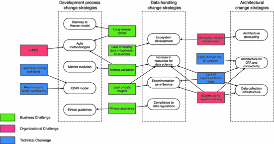

1 Introduction
Traditional embedded systems companies continuously rely on software to be a differentiator on their products. As the software size of the products increases, these companies are moving from being mechanical producers to software companies. In their development process, these companies traditionally make use of up-front requirements and rigid methodologies to ensure quality or safety attributes in their products. Nevertheless, the requirements of several parts of their systems are not clear or cannot be defined in advance [1]. In this context, developers either negotiate with requirement teams or they make implicit assumptions about the requirements [2].
Even during the requirement specification, several requirements are written based on assumptions and does not necessarily deliver value to the company or the customers. Often, research and development effort is spent on features that are never or rarely used [3] by the users of the product. To minimize the full development of features that do not deliver value, companies make use of post-deployment data of current products to iterate in future software releases or in even in new products. In the web domain, companies provide empirical evidence of the use of continuous experimentation in their development, decision-making and feature prioritization process [4–6].
As software becomes the key differentiator for many embedded systems companies, these companies started to adopt continuous development practices, such as continuous integration, deployment, and experimentation to develop faster, better and more cost-effective products. A typical pattern that companies follow is shown in the “Stairway to Heaven” model [7]. When these companies start to move to move to continuous deployment scenarios, they see opportunities to run their first experiments as well.
Although the research in continuous experimentation in web systems is continually growing, there are few examples of works investigating the use of continuous experimentation in embedded systems.
This paper identifies and analyzes the different challenges that embedded systems companies face when adopting continuous experimentation in their development processes. Moreover, it also presents strategies, guidelines, and potential solutions to overcome each of the identified challenges.
The scope of this research is captured with the following research question.
RQ: How can embedded systems industry adopt continuous experimentation in their development process?
This research question is further developed in terms of the following sub-questions:
RQ1: What are the recognized challenges towards continuous experimentation faced by the embedded systems industry?
RQ2: What are the recommended strategies to facilitate the use of continuous experimentation in the embedded systems domain?
The contribution of this paper is twofold. First, it identifies the key challenges faced by embedded systems companies when adopting continuous experimentation. These challenges are identified from both the industry perspective, through a multi-company case study, and the academic perspective, through a literature review. Second, this paper proposes different strategies and guidelines to overcome the identified challenges. This paper, to the knowledge of the authors, is the first to present an extensive set of challenges and strategies that embedded systems companies face when adopting continuous experimentation. Moreover, the analysis of the challenges points out the need for new tools and novel solutions for the further development of experimentation in embedded systems.
The rest of the paper is organized as follows. Section 2 provides a background review in continuous experimentation. Section 3 presents the research method. Section 4 presents and discusses the results in the form of identified challenges and suggested strategies. Section 5 discusses the validity threats of this research. Section 6 concludes and discusses research challenges and future works.
2 Background
Continuous experimentation refers to the research and application of controlled experimentation to drive software development, for reliably evaluate and prioritize development activities [4].
Studies show that the prioritization of features is traditionally driven by past experiences, beliefs, and organizational role [6, 8]. The decision to invest development resources in a full feature can result in inefficiency and opportunity cost if the feature does not have a confirmed value [9]. Companies traditionally rely on customers interviews and qualitative studies to derive requirements for the system in the early stages of the development [10]. However, customers usually are not good in predicting what they want or they are not aware of other potential solutions [1].
In the post-deployment stage, companies usually collect customer and product data. Most software companies, from both the embedded and web systems domains collects and logs usage and operational data [10]. In embedded systems, these log data are mostly used for troubleshooting and improving subsequent products. However, over the last decade, software companies are showing an increasing interest in using the collected data to improve not only future products but also to improve the current products.
Recent technological trends focus on not only identifying and solve technical problems but also delivering value to their customers and users [11]. The Lean Startup methodology proposes the cycle build-measure-learn [12]. In this methodology, the collected post-deployment data is also used in the improvement of the current product. The HYPEX model [9] presents an approach to shorten the feedback loop between companies and customers. The model uses hypotheses, customer feedback and the minimum viable product (MVP) to continuously decide upon the full development or abandonment of a feature.
Web-facing companies continuously report the use of post-deployment data and controlled experiments to develop and continuously improve their systems. The uncertainty raised by the environment, interaction with humans and other agents impact in the system behavior in unknown and unpredictable ways. Controlled experiments help companies to establish the causal relationship between a variation in their system and the observed behavior [6].
In software development, A/B test is the simplest version of a controlled experiment. “A” stands for the control variation and “B” stands for the treatment variation. The treatment (variation “B”) represents any point in the system that you want to modify and compare to the control (variation “A”). Both variations are deployed to randomized users, to avoid bias, and the analyzed behavior is the measured in both cases. Statistical analysis helps to determine if there is a causal difference between the observed behavior and the variations. Other experimentation techniques are described in [6].
Kohavi et al. [6] provides a guide on how to run controlled experiments in web systems. The paper discusses the important ingredients, limitations of experimentation, architectures for experimentation systems, how to analyze and how to design controlled experiments for the web. Kohavi et al. [13], presents some rules of thumb and common pitfalls when running experimentation, such as iterating in the experiment design, the impact of speed and performance, number of users and how experiments impact key metrics.
Fagerholm et al. [11] provides a general infrastructure for running continuous experimentation systematically. The RIGHT framework describes how to design and manage experiments, and how different stakeholders (business analyst, product owner, data scientists, developers, and DevOps engineers) interact with an experimentation infrastructure.
Fabijan et al. [4] describes the Experimentation Evolution Model, based on experimentation at Microsoft. This model analyzes how teams scale their experimentation from a few experiments to a data-driven organization. The model divides this evolution into four steps: crawl (teams are running and setting their first experiments), walk (teams already run a few experiments and determining metrics and experimentation platforms), run (the teams run several experiments and iterate quickly to identify effects of experiments on the business) and fly (experiments are the norm for every change to any product). Each of these phases is discussed in three different perspectives, the technical, the organizational, and the business perspectives.
One of the challenges in controlled experiments is defining an Overall Evaluation Metric (OEC) [4, 6, 14]. The OEC is a quantitative measure of the experiment’s objective. It provides a balance between short and long-term effects considering the business objectives. Olsson and Bosch [14], present a systematic approach to model the value of experiments. This approach allows companies that are starting to run the first experiments to understand and improve their own OEC metrics.
To the knowledge of the authors, the first research discussing the experiments in embedded systems appeared in 2012 [15]. This paper discusses experimentation in the context of Innovation Experiment Systems. It identifies some challenges with experimentation in embedded systems, such as experimentation in safety systems, managing multiple stakeholders and hardware limitations. It also presents an initial infrastructure to run experiments in embedded systems.
Giaimo and Berger [16], discuss continuous experimentation in the context of self-driving vehicles. The paper presents functional (such as instrumentation, logging, data feedback to a remote server) and non-functional (separation of concerns, safety, short cycle to deployment) requirements to achieve continuous software evolution. Bosch and Olsson [17], extended the concept of experimentation towards automated experimentation. Automated experimentation aims to leverage the number of experiments by letting the system own and control the experiments, opposed to the R&D organization. Mattos et al. [18, 19], identified a set of architectural qualities to support automated experimentation that was implemented in a research mobile autonomous vehicle.
3 Research Method
The research process used in this study combines a literature review with multiple case study. This research method aims to strengthen the evidence of the challenges and strategies found in a multiple case-study with others found in the research literature. Research in continuous experimentation generally utilizes the case study as the research method, combining results from both approaches reinforce the empirical evidence of the findings.
The method is composed of two parts. The first part consists of a literature review in the continuous experimentation domain. This literature review collects challenges and strategies to overcome them from academic research. The second part consists of semi-structured interviews with software companies in the embedded systems domain. It aims to be exploratory, collect and confirm challenges and strategies from the embedded systems industry. Below, the research method is described in details. The results of both parts were aggregated and described in Sect. 4. Table 1 summarizes the research process used in this paper.
Table 1.
Summary of the research method. LR stands for the literature review part and CS for the multiple case study part.
Step | Description |
|---|---|
1 | Search definition and execution (LR) |
2 | Papers review (LR) |
3 | Identification of literature challenges and strategies (LR) |
4 | Data selection: Contact with companies (CS) |
5 | Semi-structured interview protocol definition (CS) |
6 | Data collection: Interviews and workshop (CS) |
7 | Data analysis: thematic coding and categorization (CS) |
8 | Case study report (CS) |
3.1 Literature Review
The first part of the research method consists of a literature review in continuous experimentation. Although most of the studies in continuous experimentation focus on web-facing companies, the experiences from this domain, sometimes, can be extrapolated to the embedded systems domain. In this literature review, the authors identified challenges recognized in academic collaboration with industry, regardless of the industry domain. The identified challenges were discussed with the embedded systems companies to see if the literature challenges were also relevant in this domain.
Relevant works in the literature covering continuous experimentation were identified by searching the Scopus digital indexing library, by keywords, title and abstract. The used search phrase was “((continuous experimentation) OR (field experiments) OR (innovation experiment systems)) AND (software engineering)’’. This search query was restricted to the fields of engineering and computer science and limited from 2000 to 2017. This search phrase resulted in 534 articles. Positioning papers and papers with less than 5 pages were excluded. From this subset of articles, the results were filtered based on the abstract. After the first screening process, the papers were read in their integrity. Continuous experimentation is also largely studied from the statistical/algorithmic side. Research papers that focused solely on improving or evaluating algorithms without industry evaluation or application were excluded.
After this screening process, the authors identified 30 articles with relevance to this study. An additional set of 12 articles were included using a snowballing [20] process, where new references were added according to the references mentioned in the other articles. Thematic coding was used to [21] identify the challenges from the literature. These challenges were categorized according to the three different categories of the Experimentation Evolution Model [4] discussed in Sect. 2, the technical, the organizational and the business perspective. The identified set of challenges were also used as input for the semi-structured interviews as discussed in Sect. 3.2. The strategies are categorized in three groups: changes in the development process, changes in the system’s architecture and changes in how the experiment and organizational data is handled and analyzed.
The complete set of papers can be found at the following link: https://github.com/davidissamattos/public_documents/blob/master/LR-XP18.png.
{kind=link}
This part of the research process allowed the identification of challenges that served as input for the multiple case study and confirmation of identified challenges inside the company.
3.2 Multiple Case Study
The second part of the research method consists of a multiple case study [21] with semi-structured interviews conducted with software companies in the embedded systems domain. This study was conducted from December 2016 to October 2017 with five companies in the embedded systems domain. The empirical data consists of interviews and a workshops transcripts and notes. There were 8 individual semi-structured interviews with an average of one hour each, three in Company A, two in Company B, one in Company C, one in Company D and 2 in Company E. The workshop session was conducted with 8 people from Company A lasting 3 h. The analysis of the empirical data consisted of thematic coding of [21] interviews transcriptions and notes to identify and categorize the challenges and solutions. Additionally, during the interviews challenges identified in the literature were clarified to the interviews and asked if the current company relates to the challenge partially or not.
The empirical data were aggregated together with the identified challenges and strategies from the literature review. The current published research already provides guidelines and solutions for the challenges that were also identified in the literature review phase. Other guidelines and solutions were suggested by practitioners during the interviews. Challenges identified in the literature that was not confirmed neither through a previous case study nor by the case study companies are not shown.
Due to confidentiality reasons, only a short description of each company and their domain is provided:
Company A is a multinational conglomerate company that manufactures embedded systems and electronics and provides software solutions for both consumers and professionals. This study was conducted with two teams, one providing mobile communications solutions and the other providing business-to-business products. In recent years, the company started to adopt experimentation in their software solutions and is looking for data-driven strategies in their embedded systems products. The interviewees were developers, managers and data analysts.
Company B is a multinational company that provides telecommunication and networking systems. The company is adopting continuous development practices and is looking for new strategies to deliver more value to their customers by optimizing their products. The interviewees were managers.
Company C is a global automotive manufacturer and supplier of transport solutions. As the company’s products are continuously growing in complexity and software size, the company is looking for strategies to prioritize their R&D effort and deliver more value to their customers. As some employees have experience in web and pure software-systems development, experimentation is getting attention in some development teams. Challenges in experimentation arise since the company is subjected to several regulations and certification procedures. The interviewee was a senior engineer.
Company D is a global software company that develops and provides embedded systems software solutions related to autonomous driving technology for the automotive industry. Autonomous driving is an emerging and fast-moving technology and the company is looking to deliver competitive solutions faster by adopting continuous development practices. However, as it interfaces with the highly regulated automotive domain its software is also subjected to regulation and certification. The interviewee was a manager.
Company E is a global software company that develops both software and hardware solutions for home consumers. The company already has experience running continuous experimentation in their web systems and is starting to run experiments in their hardware solutions. The interviewees were senior data analysts working in experimentation in their embedded systems.
4 Challenges and Proposed Strategies
This section presents results obtained from the research process. The challenges are grouped in the three different perspectives as discussed in the Experimentation Evolution Model [4]: the technical challenges, the business challenges and the organizational challenges. The technical challenges refer to challenges related to the system architecture, experimentation tooling and development processes. The business challenges refer to challenges faced in the business side, such as evaluation metrics, business models and privacy concerns. The organizational challenges refer to challenges faced by the cultural aspect of the R&D organization.
All the strategies identified in this study are used, suggested by companies, or supported by strategies identified in previous literature case studies. The strategies are categorized in three groups: (1) changes in the development process. This refers to how companies organize their development activities. (2) changes in the system’s architecture. Often restrictions in the running experiments comes from limitations in the system’s architecture, that does not support data collection, or does not allow parametrization of features for experiments. (3) changes in how the experiment and organizational data is handled and analyzed. This refers to how the company stores data, comply to data regulations or use data analysis tools. The challenges are not presented in any specific order as they might reflect different challenges the companies are facing.
Figure 1 represents a summary of the identified challenges and strategies. In Fig. 1, it is possible to see the relation of how each strategy relates to the different challenges, as some of them are part of the strategy of one or more challenge. This figure was obtained using the thematic codes generated in the analysis of the interviews. It maps the identified challenges within their groups with the obtained strategies groups. The rest of this section discusses each challenge individually and presents strategies to overcome them.

Fig. 1.
Summary of the challenges and the strategies faced by embedded systems companies adopting continuous experimentation.
4.1 Technical Challenges
Lack of over the air (OTA) updates and data collection
Continuous experimentation requires over-the-air (OTA) post-deployment data collection and updates. When testing a different hypothesis, the system needs to have the ability to measure the specific behavior under investigation and to update the system with the new variants as well. It is possible to run experiments without OTA, however, several experiments pitfalls can be identified in the first hours and be corrected [6]. Moreover, experiments for optimization are looking in practical significance as low as 1–2% in their metrics [6, 13]. If OTA updates and data collection are not available the cost of the experiment and the practical significance level are high and the optimization process might not be worth it.
Strategies:
At the moment of this study, embedded system companies are not looking into experimentation in low level systems, but in computing systems that already support modern operating systems with connectivity and the necessary infrastructure for OTA updates. OTA updates and post-deployment data collection should be part of the functional requirements of the system when designing the hardware. Mobile companies already provide such functionality in their operating systems. Car manufacturers are also introducing continuous delivery of new software to their vehicles in the context of autonomous vehicles (Tesla Motor’s Model S, Volvo Drive Me and the Volvo XC90).
Lack of experimentation tools that integrate with their existing tooling
Continuous experimentation started in web-facing companies. Today several experimentation tools, both commercial and open source, are available on the website and mobile applications domains. However, in the embedded systems domain, companies lack tools that integrate with their development process. Setting up an infrastructure to run experiments from scratch increases the cost of running the first experiments while hindering the benefits.
Strategies:
Several tools available for websites are open source or have open source SDKs. Although not ideal, some of these tools can be modified to support experimentation problems. Experimentation-as-a-Service (EaaS) is a business model that provides a working platform for continuous experimentation. EaaS have the benefit of avoiding the cost and pitfalls of development of an experimentation platform from scratch. EaaS platforms also provide SDKs that can be incorporated in the product [22]. However, the system under experimentation should support data collection so it can be integrated with EaaS tools.
Expensive testing environments
Software-intensive embedded systems are extensively tested before release. One of the challenges faced by embedded systems companies is to include experimentation as part of the verification and validation process. In some cases, such as in the development of a new vehicle, the testing environment is expensive and not all experiment hypotheses are allowed to go to a physical testing platform. This high cost also increases minimum level necessary to reach practical significance and demotivates teams to formulate hypothesis beyond the basic requirements of the system.
Strategies:
The development of experiments in the embedded systems domain require additional steps from the hypothesis to the final user. The development of a feature in embedded systems follows a testing procedure, beginning with integration and going to simulation, test beds, internal deployment until user deployment. The experimentation procedure should follow similar testing procedure, to identify early pitfalls, and even improve the system behavior during each testing phase.
The practical significance level to implement a new hypothesis increases with the associated costs of such testing procedure. The EDAX model [17] describes how experimentation and automated experimentation is incorporated in this process. Automated experimentation [18] also suggests that it can reduce the experimentation costs and therefore the practical significance level.
Experimentation constraints in real-time and safety-critical systems
Embedded systems are employed in several real-time and safety-critical systems. These products have subsystems that are constrained to regulations and certification. Experimenting with these systems in the field might not be allowed by regulation or might impact substantially the performance of the system.
Strategies:
Embedded systems companies are starting to run their first experiments. Safety-critical or real-time systems provide additional challenges, as it is subjected to legislation and certification. The initial recommendation in all case study companies is not to run experimentations in these subsystems. However, these safety-critical subsystems can run experiments in the earlier phases prior to the deployment, as discussed in the EDAX model [17].
4.2 Business Challenges
Determining good experimentation metrics and metrics validation
One of the biggest challenge faced by companies is to determine good business metrics to understand and compare different experiments, and validate that the current metrics are aligned with the company strategy
Strategies:
Web companies traditionally rely on conversion metrics such as Click-Through-Rate in the beginning of their experimentation process. As their experimentation teams and the number of experiments increase the metrics start to become more tailored to the business and stable [4]. Embedded systems companies can have very different and complex metrics, depending on the product. However, team level optimization experiments can use customized metrics. Olsson and Bosch [14] presents a systematic approach to determine metrics and value functions for experiments. This is an iterative process that should be refined with usage and aligned with the business strategies and goals. As the metrics become complex, companies allocate of resources for the evolution and ensuring that the experiment metrics are aligned with the company’s main KPIs.
Privacy concerns regarding user data
Continuous experimentation relies on the collection and analysis of post-deployed software. However, some issues arise when collecting data, such as the legal and contractual issues or user consent and data sharing.
Strategies:
Data sensitivity and the use of data vary largely between different organizations and countries. Data collection should be aligned with the legal requirements for utilization and consent of the users. Data regulations such as the European GDPR (https://www.eugdpr.org/) create restrictions that might imply in technology and process modifications for compliance. Additionally, some ethical questions regarding the experiment must be evaluated, such as: How are participants guaranteed that their data, which was collected for use in the study, will not be used for some other purpose? What data may be published more broadly, and does that introduce any additional risk to the participants? Web companies, besides compliance with regulations also create ethical checklists to ensure that the experiments follow the companies’ policies [23].
Lack of sharing user data in business-to-business (B2B) solutions
Several embedded systems companies operate in a business-to-business domain. In this scenario, there is a difference between user and customer data. Experiments with users might not be possible, they might require deeper involvement between the companies, or there might be a mismatch between the customer and the user value [1].
Strategies:
Ecosystems refers to companies co-opting third parties to build and leverage their products and services in such a way that they have more utility value to their customers [24]. In this sense, companies might agree on implementing and sharing data collected inside the ecosystem. Some mobile operating systems (e.g. iOS and Android) collect data and usage statistics to share with app developers. Although most of its use is connected to crash reports, similar strategies can be used to share user data in business-to-business products.
Lack of insights obtained from the collected data
Companies are continuously collecting data from their deployed software. The collected data is mainly used for troubleshooting purposes. However, little insight is provided by the collected data [14]. In the Experimentation Evolution Model [4], web companies evolve from centralized data science teams to small data science teams presented in each product teams. The interviewed embedded systems companies don’t have data science teams incorporated in the product development.
Strategies:
If the experimentation benefits are not clear, the extra cost of involving data scientists in the product development might be a large step. Different companies started to provided experimentation and data analysis services. Experimentation tools usually incorporate basic statistical analysis, such as statistical significance testing, power analysis, A/A tests and more. Using experimentation and data analysis services to generate basic insights can be used as a short-term solution. Once the benefits of experimentation are clear to the company, investments such as integrating data scientists in the product development or acquiring a complex tool are easier to justify.
Long release cycles
Traditionally, embedded systems have a long software release cycle based on upfront defined requirements. Sometimes the software is deployed only once and last for several years [1, 15]. This happens due to several reasons, from both the organizational (structure and decision-making) and business (engineering effort in every cycle, requirements definition and products updates) to the technical perspective (architecture, functionalities available and support for over-the-air updates).
Strategies:
From the organizational and business perspective, continuous experimentation aligns with the organizational transition to agile methodologies and the Lean Startup methodology [12]. Continuous experimentation makes use of extreme programming practices such as continuous integration, delivery and deployment to deliver experiments and new software aligned with customer behavior. The Stairway to Heaven [7] conceptual model helps companies to evolve their practices towards continuous deployment of software.
4.3 Organizational Challenges
Managing multiple stakeholders in the experiment design
One of the challenges embedded systems companies face is the involvement of multiple stakeholders in an experimental design. Experimentation in embedded systems requires that the involved stakeholders understand the implications of continuous practices in their systems.
Strategies:
Embedded systems require the interaction with multiple stakeholders, such as software developers, systems architects, electrical and mechanical engineers, suppliers and subcontractors. Continuous experimentation requires that these stakeholders are aware of the implications in the system design. To overcome some of these challenges, it is prosed a decoupling of the application and the underlying software and also a decoupling in time (software is not integrated at the manufacturing time) [15]. Additionally, if the interaction of the stakeholders happens in a business ecosystems perspective the experiment can be designed to benefit multiple parts [24].
Highest Paid Person Opinion - HiPPO
Some companies are organized in vertical structures, where lower rank developers have fewer possibilities to influence and address customer’s needs. Several requirements and architecture specifications are based and determined by higher paid ranks inside the company.
Strategies:
This challenge is persistent in several domains and it is not restricted to the embedded systems industries. This challenge is discussed extensively in [6] among other publications. The traditional adopted strategy is to run the first experiments. Usually, experiments continuously disprove beliefs and opinions adopted by the higher paid ranks [6]. However, this requires changes in the organizational and cultural aspect of the company.
Tuning experiments is repetitive and requires highly qualified engineers
One of the interviewed companies runs experiments for parameter optimization. The experiments rely on the system response instead of the customer response. However, running these experiments for tuning and optimization is a repetitive task that consumes R&D time and requires highly qualified engineers to perform them.
Strategies:
Existing algorithms in search-based optimization, reinforcement learning and others artificial intelligence algorithms support this kind of optimization strategies. However, both the complexity of these algorithms as well as the introduced technical debt in the existing systems [25] prevent embedded systems companies to use such strategies. Experimentation-as-a-Service solutions allow companies to test Machine Learning algorithms in their system for optimization purposes. Although still in early phases, automated experimentation [18] solutions can help companies to optimize their systems through field experiments.
5 Validity Threats
The first threat to the validity of this study refers to the scope of the literature review. The search query was applied to the Scopus indexing library. Both the choice of the search string and the indexing library could miss other research work that can contribute to the literature review. To mitigate this threat the authors performed a backward and forward snowballing [20] process. The snowballing process allowed the authors to identify other cited work in the same area that was not identified by the search query.
An external validity to this is study is the generalization of the challenges to the entire population of embedded systems companies. To mitigate this threat, the authors sample companies producing different products in embedded systems. The authors sampled contacted multiple companies explaining the research goal, and selected only companies that are adopting/running controlled experiments in their development process were included. During the data analysis part, we reviewed all challenges only challenges that had correspondence in more than one company or that could be triangulated with the literature review were included. Challenges that could not be triangulated with other source, and that could be specific to current situation of the company, were not included in this study.
The companies that participated in this study are adopting their first steps towards continuous experimentation and are running their first experiments or trying to scale experimentation practices from a few development teams to the organization. Therefore, most of the presented challenges are faced in these first steps and cannot be generalized to companies or teams that are running experimentation at scale. As the companies evolve their experimentation practices, new challenges will arise from all three perspectives.
6 Conclusion
This paper addresses the question of how embedded systems companies can adopt continuous experimentation in their software development process. This question can be divided in two parts: first, the identification of problems and challenges that limit the adoption of continuous experimentation, and second selected strategies adopted by companies to overcome these challenges.
This paper identified twelve key challenges faced by embedded systems and them grouped in three perspectives, the business, the technical and the organizational. The challenges are also presented with suggested strategies to overcome them. The set of strategies can be grouped in three categories, changes that need to take place in how the company handles and analyze the post-deployment collected data, changes in the company development process and changes in the product architecture. The relation between the different strategies and the challenges is seen in Fig. 1. The paper used a combination of literature review and a multiple company case study to provide a stronger empirical evidence.
Further research is needed to understanding how the system can be architected to support continuous experimentation as a first-class citizen in the development process while still guaranteeing safety and real-time requirements as well as intermittent connectivity. Additionally, continuous experimentation changes how the development process takes place, as it emphasizes in an outcome-driven development and this scenario might lead to impactful organizational changes. For future works, the authors are investigating where is the perceived highest return on investment that companies see and plan to invest to overcome the identified challenges and further support of continuous experimentation in their products.
Acknowledgments
This work was partially supported by the Wallenberg Autonomous Systems and Software Program (WASP) and the Software Center.

Open Access This chapter is licensed under the terms of the Creative Commons Attribution 4.0 International License (http://creativecommons.org/licenses/by/4.0/), which permits use, sharing, adaptation, distribution and reproduction in any medium or format, as long as you give appropriate credit to the original author(s) and the source, provide a link to the Creative Commons license and indicate if changes were made.
The images or other third party material in this book are included in the book's Creative Commons license, unless indicated otherwise in a credit line to the material. If material is not included in the book's Creative Commons license and your intended use is not permitted by statutory regulation or exceeds the permitted use, you will need to obtain permission directly from the copyright holder.
References
1.
Lindgren, E., Münch, J.: Raising the odds of success: the current state of experimentation in product development. Inf. Softw. Technol. 77, 80–91 (2016)Crossref
2.
Eliasson, U., Heldal, R., Knauss, E., Pelliccione, P.: The need of complementing plan-driven requirements engineering with emerging communication: experiences from Volvo Car Group. In: Proceedings of 2015 IEEE 23rd International Requirements Engineering Conference RE 2015, pp. 372–381 (2015)
3.
Olsson, H.H., Bosch, J.: From opinions to data-driven software R&D: a multi-case study on how to close the ‘open loop’ problem. In: Proceedings of 40th Euromicro Conference Series on Software Engineering and Advanced Applications SEAA 2014, pp. 9–16 (2014)
4.
Fabijan, A., Dmitriev, P., Olsson, H.H., Bosch, J.: The evolution of continuous experimentation in software product development. In: Proceedings of the 39th International Conference on Software Engineering ICSE 2017 (2017)
5.
Tang, D., Agarwal, A., O’Brien, D., Meyer, M.: Overlapping experiment infrastructure. In: Proceedings of the 16th ACM SIGKDD International Conference on Knowledge Discovery and Data Mining-KDD 2010, p. 17 (2010)
6.
Kohavi, R., Longbotham, R., Sommerfield, D., Henne, R.M.: Controlled experiments on the web: survey and practical guide. Data Min. Knowl. Discov. 18(1), 140–181 (2009)MathSciNetCrossref
7.
Olsson, H.H., Bosch, J.: Climbing the “Stairway to Heaven”: evolving from agile development to continuous deployment of software. In: Bosch, J. (ed.) Continuous Software Engineering, pp. 15–27. Springer, Cham (2014). https://doi.org/10.1007/978-3-319-11283-1_2Crossref
8.
Bosch, J.: Building products as innovation experiment systems. In: Cusumano, M.A., Iyer, B., Venkatraman, N. (eds.) ICSOB 2012. LNBIP, vol. 114, pp. 27–39. Springer, Heidelberg (2012). https://doi.org/10.1007/978-3-642-30746-1_3Crossref
9.
Olsson, H.H., Bosch, J.: The HYPEX model: from opinions to data-driven software development. In: Bosch, J. (ed.) Continuous Software Engineering, pp. 1–226. Springer, Cham (2014). https://doi.org/10.1007/978-3-319-11283-1_13Crossref
10.
Fabijan, A., Olsson, H.H., Bosch, J.: The lack of sharing of customer data in large software organizations: challenges and implications. In: Sharp, H., Hall, T. (eds.) XP 2016. LNBIP, vol. 251, pp. 39–52. Springer, Cham (2016). https://doi.org/10.1007/978-3-319-33515-5_4Crossref
11.
Fagerholm, F., Sanchez Guinea, A., Mäenpää, H., Münch, J.: The RIGHT model for continuous experimentation. J. Syst. Softw. 123, 292–305 (2017)Crossref
12.
Ries, E.: The Lean Startup: How Today’s Entrepreneurs Use Continuous Innovation to Create Radically Successful Businesses, 1st edn. Crown Publishing Group, New York (2011)
13.
Kohavi, R., Deng, A., Longbotham, R., Xu, Y.: Seven rules of thumb for web site experimenters. In: Proceedings of the 20th ACM SIGKDD International Conference on Knowledge Discovery and Data Mining-KDD 2014, pp. 1857–1866 (2014)
14.
Olsson, H.H., Bosch, J.: So much data ; so little value : a multi-case study on improving the impact of data-driven development practices. In: Proceedings of the Ibero American Conference on Software Engineering (ClbSE), 22nd–23rd May, Buenos Aires, Argentina (2017)
15.
Bosch, J., Eklund, U.: Eternal embedded software: towards innovation experiment systems. In: Margaria, T., Steffen, B. (eds.) ISoLA 2012. LNCS, vol. 7609, pp. 19–31. Springer, Heidelberg (2012). https://doi.org/10.1007/978-3-642-34026-0_3Crossref
16.
Giaimo, F., Berger, C.: Design criteria to architect continuous experimentation for self-driving vehicles. In: 2017 IEEE International Conference on Software Architecture (ICSA), pp. 203–210 (2017)
17.
Bosch, J., Olsson, H.H.: Data-driven continuous evolution of smart systems. In: Proceedings of the 11th International Workshop on Software Engineering for Adaptive and Self-Managing Systems-SEAMS 2016, pp. 28–34 (2016)
18.
Mattos, D.I., Bosch, J., Olsson, H.H.: Your system gets better every day you use it: towards automated continuous experimentation. In: Proceedings of the 43th Euromicro Conference on Software Engineering and Advanced Applications (SEAA) (2017)
19.
Mattos, D.I., Bosch, J., Holmström Olsson, H.: More for less: automated experimentation in software-intensive systems. In: Felderer, M., Méndez Fernández, D., Turhan, B., Kalinowski, M., Sarro, F., Winkler, D. (eds.) PROFES 2017. LNCS, vol. 10611, pp. 146–161. Springer, Cham (2017). https://doi.org/10.1007/978-3-319-69926-4_12Crossref
20.
Wohlin, C., Runeson, P., Höst, M., Ohlsson, M.C., Regnell, B., Wesslén, A.: Experimentation in Software Engineering, vol. 1. Springer, Heidelberg (2012). https://doi.org/10.1007/978-3-642-29044-2Crossref
21.
Runeson, P., Höst, M.: Guidelines for conducting and reporting case study research in software engineering. Empir. Softw. Eng. 14(2), 131–164 (2009)Crossref
22.
Optimizely, “Optimizely.” https://www.optimizely.com/. Accessed 28 June 2017
23.
Zhang, B.: Privacy Concerns in Online Recommender Systems: Influences of Control and User Data Input, pp. 159–173 (2014)
24.
Holmström Olsson, H., Bosch, J.: From ad hoc to strategic ecosystem management: the Three-Layer Ecosystem Strategy Model? (TeLESM). J. Softw. Evol. Process 29, e1876 (2017)Crossref
25.
Sculley, D., Holt, G., Golovin, D., Davydov, E., Phillips, T., Ebner, D., Chaudhary, V., Young, M., Dennison, D.: Hidden Technical debt in machine learning systems. In: NIPS, pp. 2494–2502 (2015)